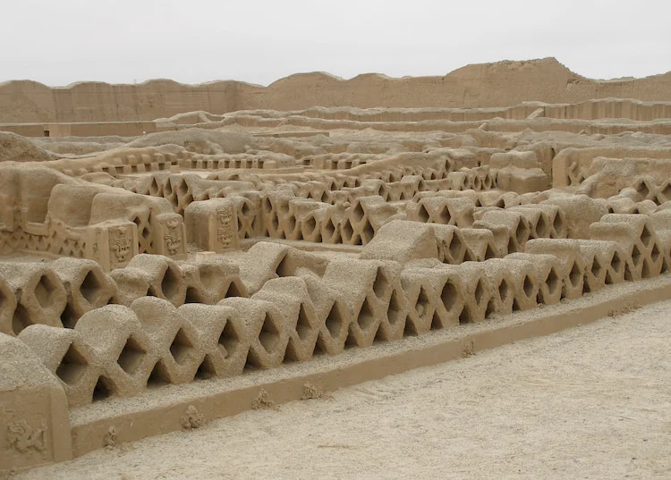
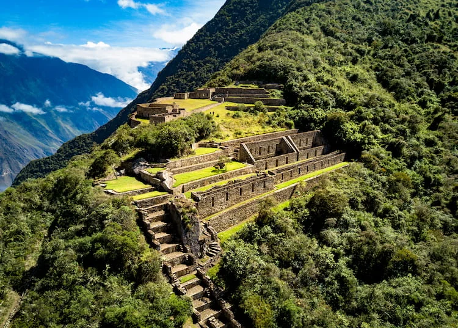
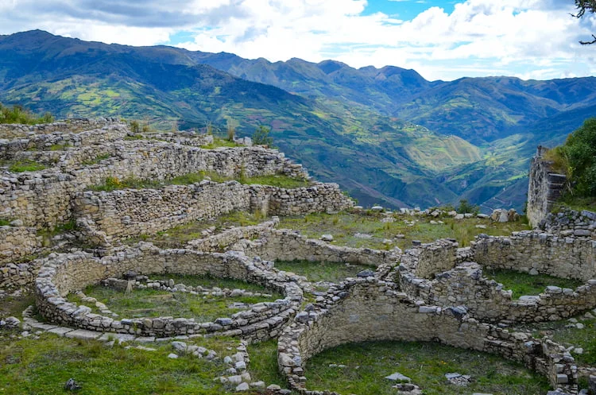
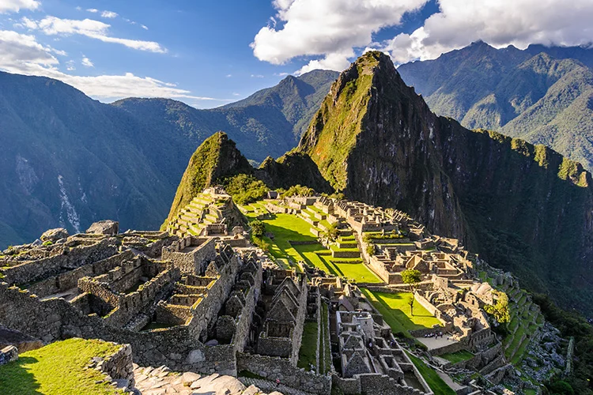
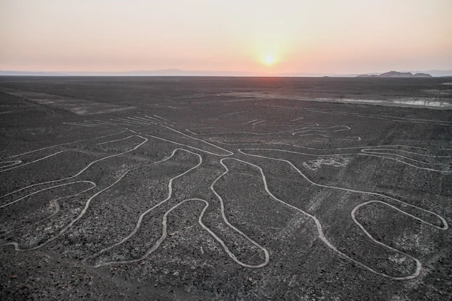

1. Chan Chan

Chan Chan is an impressive site in Peru and the world’s largest adobe city as well as the largest pre-Colombian city in the Americas. As the capital of the ancient Chimu civilisation, Chan Chan was developed in around 1300 AD and would have reached its peak in the 15th century, after which the Chimu were overtaken by the Incas and the city was abandoned. The Chimu were extremely sophisticated builders and engineers.
2. Choquequirao

Choquequirao is a little known Incan city in the south of Peru which may well have served as the final stronghold of the Incan civilisation. Similar in design and architecture to the far better known Machu Picchu, Choquequirao is almost devoid of tourist due to its isolated position, which makes it far more atmospheric and worth the effort it takes to get there.
3. Kuélap

Kuélap is an imposing 9th century fortress known as the Macchu Picchu of the North, which was once the stronghold of the Chachapoyas people, a tribe who lived in the region until shortly before the Spanish conquest. Looming some 3,000 metres above sea level, Kuélap is an impressive site, with limestone walls surrounding a settlement of around 450 stone houses. It was once home to up to 3,000 people, and many of the structures still include their thatched roofs along with intricate carvings.
4. Machu Picchu

Machu Picchu is an extraordinary ancient stone city along the Inca Trail in Peru and forms one of the most famous historical sites in the world. The site is big and there’s plenty to explore – make sure you get the full view by climbing to Huayna Picchu. Some of Machu Picchu’s most impressive structures include the semi-circular Temple of the Sun, the Temple of the Three Windows, the mausoleum and the upper cemetery. There are various trails around the site which are good hiking if you haven’t arrived via the Inca Trail.
5. Nazca Lines
